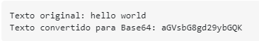
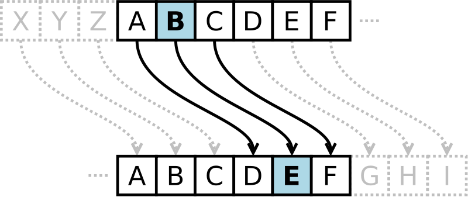

Bem-vindo ao Codificador e Decodificador, abaixo veja os passos de utilização.
Codifique e Decodifique em Base64
A codificação Base64 é frequentemente utilizada quando existe uma necessidade de transferência e armazenamento de dados binários para um dispositivo designado para trabalhar com dados textuais. Esta codificação é amplamente utilizada por aplicações em conjunto com a linguagem de marcação XML, possibilitando o armazenamento de dados binários em forma de texto.
É constituído por 64 caracteres ([A-Za-z0-9], "/" e "+") que deram origem ao seu nome. O carácter "=" é utilizado como um sufixo especial e a especificação original (RFC 989) definiu que o símbolo "*" pode ser utilizado para delimitar dados convertidos, mas não criptografados, dentro de um stream.
Exemplo de codificação:

Codifique e Decodifique em Cifra de Cesar
Esse sistema de substituição criado por Cesar pode também ser chamado de Cifra de deslocamento de Cesar, pois segundo Suetônio, Cesar representou todo o alfabeto e em seguida fez uma nova representação deslocando 3 casas.
Se usarmos o alfabeto atual teríamos a seguinte representação

Agora temos um método que pode ser utilizado tanto para criptografar como para fazer a ordem reversa que é descriptografia, e para isso basta conhecer o método ou a chave de criptografia.
Essa cifra usa uma chave que foi o deslocamento de três casas referentes as letras do alfabeto. Levando em consideração todas as letras de nosso alfabeto que podemos deslocar teríamos um conjunto de 25 chaves diferentes. Basta apenas que o criador da mensagem cifrada antecipadamente combine com o receptor da mensagem